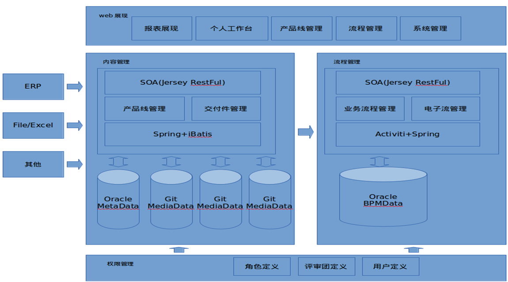

汇川IPMP集成产品管理平台
项目的需求和背景
深圳市汇川技术股份有限公司专注于工业自动化控制产品的研发、生产和销售，定位服务于中高端设备制造商，主要做变频器。 随着公司的发展，扩展到十多个产品线了，每条产品线的运营流程逐渐成熟，以多部门协作为象征的工作模式正在形成， 非常需要一套定制的流程管理去规范化每个产品线的流程； 另外企业知识沉淀的系统不能满足现在的信息化需求，文档的检索，历史版本的查看，外网安全访问的问题促使企业内容管理的升级换代。
实施完的效果
做了12个产品线的流程定制，产品线之间的流程存在细微差别，可以个性化定制每个产品线流程， 产品线运作过程中产生文档资料根据流程升级版本进行了版本控制，可以查看历史版本信息。 可以有效管理资料文档，规范了管理流程，提升了工作效率，文档资料等资源得到了充分利用。 为市场和销售人员提供便捷的产品信息管理功能，为市场销售拓展提供有力支撑。
实现方案和实施效果
采用JackRabbit框架实现内容管理，使用Activiti工作流引擎，框架采用grails快速开发，中间件使用tomcat。 项目在流程设计花的时间比较多，用户对流程自定义和流程中字段变化倒没有太多要求，反而对流程节点的任意回退，以及权限的灵活控制要求很高。 业内标准的activiti本身的功能并没有很好的体现出来，因此项目过程中花在集成/修改/调试activiti的时间是不值的的。当然项目也是有收获的，在使用了 activiti后，了解他的设计理念，我们也能自己设计精简的流程控制。